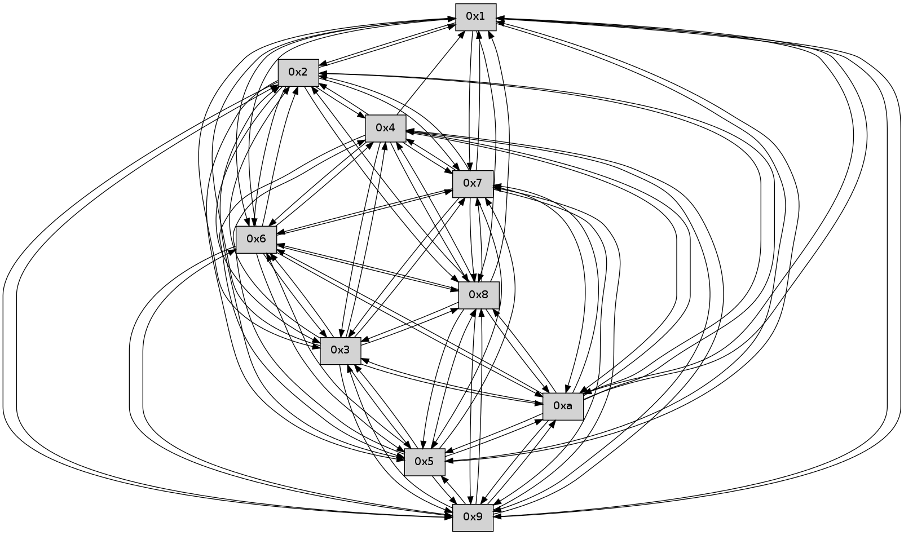

>> << IDX [start] -100 -25 -5 +0 +5 +25 +100 [340.112861156]
 Previous packets
----------------------------------------------------------------------
335.384070 beacon01(faad) #0 coord=01,02,03,04,05,06,07,0a,09,08 cycle=688.0ms assoc
-- color-indic=0 64 bb ea
335.394051 beacon02(faad) #0 coord=01,02,03,04,05,06,07,0a,09,08 cycle=688.0ms assoc 64 28 db
335.404052 beacon03(faad) #0 coord=01,02,03,04,05,06,07,0a,09,08 cycle=688.0ms assoc 64 52 96
335.414053 beacon04(faad) #0 coord=01,02,03,04,05,06,07,0a,09,08 cycle=688.0ms assoc 64 25 7c
335.424054 beacon05(faad) #0 coord=01,02,03,04,05,06,07,0a,09,08 cycle=688.0ms assoc 64 5f 31
335.434053 beacon06(faad) #0 coord=01,02,03,04,05,06,07,0a,09,08 cycle=688.0ms assoc 64 d1 e6
335.444053 beacon07(faad) #0 coord=01,02,03,04,05,06,07,0a,09,08 cycle=688.0ms assoc 64 ab ab
335.454057 beacon0a(faad) #0 coord=01,02,03,04,05,06,07,0a,09,08 cycle=688.0ms assoc 64 da a0
335.464058 beacon09(faad) #0 coord=01,02,03,04,05,06,07,0a,09,08 cycle=688.0ms assoc 64 54 77
335.474060 beacon08(faad) #0 coord=01,02,03,04,05,06,07,0a,09,08 cycle=688.0ms assoc 64 2e 3a
335.485201 [Hello(8): seq=161 sym=5,2,3,7,6,9,10,1 sysInfo= stat=5:8,0,0,0/2:9,0,0,0/3:9,0,0,0/7:3,0,0,0/6:7,0,0,0/9:7,0,0,0/10:7,0,0,0/1:2,0,0,0]
335.489331 [Hello(10): seq=150 sym=6,3,2,5,9,8,7,4,1 sysInfo= stat=6:3,0,0,0/3:12,0,0,0/2:4,0,0,0/5:4,0,0,0/9:0,0,0,0/8:8,0,0,0/7:8,0,0,0/4:0,0,0,0/1:11,0,0,0]
335.492498 [Hello(9): seq=161 sym=5,2,3,4,7,6,8,10,1 sysInfo= stat=5:15,0,0,0/2:14,0,0,0/3:14,0,0,0/4:7,0,0,0/7:2,0,0,0/6:10,0,0,0/8:14,0,0,0/10:13,0,0,0/1:4,0,0,0]
335.496048 [Hello(6): seq=218 sym=2,3,5,4,7,9,8,10,1 sysInfo= stat=2:12,0,0,0/3:10,0,0,0/5:13,0,0,0/4:5,0,0,0/7:11,0,0,0/9:1,0,0,0/8:1,0,0,0/10:15,0,0,0/1:15,0,0,0]
335.499218 [Hello(7): seq=218 sym=2,3,5,6,8,9,10,1 sysInfo= stat=2:9,0,0,0/3:7,0,0,0/5:0,0,0,0/6:7,0,0,0/8:12,0,0,0/9:14,0,0,0/10:11,0,0,0/1:0,0,0,0]
----------------------------------------------------------------------
336.172202 beacon01(faad) #0 coord=01,02,03,04,05,06,07,0a,09,08 cycle=688.0ms assoc
-- color-indic=0 64 8f f2
336.182184 beacon02(faad) #0 coord=01,02,03,04,05,06,07,0a,09,08 cycle=688.0ms assoc 64 1c c3
336.192185 beacon03(faad) #0 coord=01,02,03,04,05,06,07,0a,09,08 cycle=688.0ms assoc 64 66 8e
336.202183 beacon04(faad) #0 coord=01,02,03,04,05,06,07,0a,09,08 cycle=688.0ms assoc 64 11 64
336.212185 beacon05(faad) #0 coord=01,02,03,04,05,06,07,0a,09,08 cycle=688.0ms assoc 64 6b 29
336.222185 beacon06(faad) #0 coord=01,02,03,04,05,06,07,0a,09,08 cycle=688.0ms assoc 64 e5 fe
336.232186 beacon07(faad) #0 coord=01,02,03,04,05,06,07,0a,09,08 cycle=688.0ms assoc 64 9f b3
336.242190 beacon0a(faad) #0 coord=01,02,03,04,05,06,07,0a,09,08 cycle=688.0ms assoc 64 ee b8
336.252188 beacon09(faad) #0 coord=01,02,03,04,05,06,07,0a,09,08 cycle=688.0ms assoc 64 60 6f
336.262192 beacon08(faad) #0 coord=01,02,03,04,05,06,07,0a,09,08 cycle=688.0ms assoc 64 1a 22
336.273346 [Hello(3): seq=219 sym=1,7,6,2,8,9,10,5 sysInfo= stat=1:1,0,0,0/7:2,0,0,0/6:15,0,0,0/2:9,0,0,0/8:2,0,0,0/9:9,0,0,0/10:4,0,0,0/5:6,0,0,0]
336.277006 [Hello(5): seq=219 sym=7,6,4,3,1,9,8,10,2 sysInfo= stat=7:5,0,0,0/6:11,0,0,0/4:0,0,0,0/3:12,0,0,0/1:0,0,0,0/9:2,0,0,0/8:6,0,0,0/10:10,0,0,0/2:10,0,0,0]
336.279574 [Hello(4): seq=219 sym=5,7,6,2,3,9,8,10,1 sysInfo= stat=5:9,0,0,0/7:7,0,0,0/6:11,0,0,0/2:12,0,0,0/3:0,0,0,0/9:3,0,0,0/8:11,0,0,0/10:14,0,0,0/1:1,0,0,0]
336.288662 [Hello(1): seq=127 sym=2,9,5,10,3,8,6,7 sysInfo= stat=2:11,0,0,0/9:7,0,0,0/5:15,0,0,0/10:12,0,0,0/3:8,0,0,0/8:6,0,0,0/6:14,0,0,0/7:2,0,0,0]
336.298855 [Hello(2): seq=216 sym=4,5,7,6,3,9,8,10,1 sysInfo= stat=4:0,0,0,0/5:3,0,0,0/7:0,0,0,0/6:10,0,0,0/3:4,0,0,0/9:12,0,0,0/8:9,0,0,0/10:9,0,0,0/1:0,0,0,0]
----------------------------------------------------------------------
336.960334 beacon01(faad) #0 coord=01,02,03,04,05,06,07,0a,09,08 cycle=688.0ms assoc
-- color-indic=0 64 33 f7
336.970316 beacon02(faad) #0 coord=01,02,03,04,05,06,07,0a,09,08 cycle=688.0ms assoc 64 a0 c6
336.980316 beacon03(faad) #0 coord=01,02,03,04,05,06,07,0a,09,08 cycle=688.0ms assoc 64 da 8b
336.990317 beacon04(faad) #0 coord=01,02,03,04,05,06,07,0a,09,08 cycle=688.0ms assoc 64 ad 61
337.000316 beacon05(faad) #0 coord=01,02,03,04,05,06,07,0a,09,08 cycle=688.0ms assoc 64 d7 2c
337.010318 beacon06(faad) #0 coord=01,02,03,04,05,06,07,0a,09,08 cycle=688.0ms assoc 64 59 fb
337.020319 beacon07(faad) #0 coord=01,02,03,04,05,06,07,0a,09,08 cycle=688.0ms assoc 64 23 b6
337.030322 beacon0a(faad) #0 coord=01,02,03,04,05,06,07,0a,09,08 cycle=688.0ms assoc 64 52 bd
337.040323 beacon09(faad) #0 coord=01,02,03,04,05,06,07,0a,09,08 cycle=688.0ms assoc 64 dc 6a
337.050323 beacon08(faad) #0 coord=01,02,03,04,05,06,07,0a,09,08 cycle=688.0ms assoc 64 a6 27
337.061796 [Hello(10): seq=151 sym=6,3,2,5,9,8,7,4,1 sysInfo= stat=6:4,0,0,0/3:13,0,0,0/2:5,0,0,0/5:5,0,0,0/9:1,0,0,0/8:8,0,0,0/7:9,0,0,0/4:1,0,0,0/1:12,0,0,0]
337.065140 [Hello(8): seq=162 sym=5,2,3,4,7,6,9,10,1 sysInfo= stat=5:9,0,0,0/2:10,0,0,0/3:10,0,0,0/4:0,0,0,0/7:4,0,0,0/6:8,0,0,0/9:8,0,0,0/10:8,0,0,0/1:3,0,0,0]
337.068159 [Hello(6): seq=219 sym=2,3,5,4,7,9,8,10,1 sysInfo= stat=2:13,0,0,0/3:11,0,0,0/5:14,0,0,0/4:6,0,0,0/7:12,0,0,0/9:1,0,0,0/8:1,0,0,0/10:15,0,0,0/1:0,0,0,0]
337.071673 [Hello(9): seq=162 sym=5,2,3,4,7,6,8,10,1 sysInfo= stat=5:0,0,0,0/2:15,0,0,0/3:15,0,0,0/4:8,0,0,0/7:3,0,0,0/6:11,0,0,0/8:14,0,0,0/10:13,0,0,0/1:5,0,0,0]
337.079767 [Hello(7): seq=219 sym=2,3,5,6,8,9,10,1 sysInfo= stat=2:10,0,0,0/3:8,0,0,0/5:1,0,0,0/6:7,0,0,0/8:12,0,0,0/9:14,0,0,0/10:11,0,0,0/1:1,0,0,0]
----------------------------------------------------------------------
337.748467 beacon01(faad) #0 coord=01,02,03,04,05,06,07,0a,09,08 cycle=688.0ms assoc
-- color-indic=0 64 f7 f9
337.758448 beacon02(faad) #0 coord=01,02,03,04,05,06,07,0a,09,08 cycle=688.0ms assoc 64 64 c8
337.768448 beacon03(faad) #0 coord=01,02,03,04,05,06,07,0a,09,08 cycle=688.0ms assoc 64 1e 85
337.778449 beacon04(faad) #0 coord=01,02,03,04,05,06,07,0a,09,08 cycle=688.0ms assoc 64 69 6f
337.788448 beacon05(faad) #0 coord=01,02,03,04,05,06,07,0a,09,08 cycle=688.0ms assoc 64 13 22
337.798450 beacon06(faad) #0 coord=01,02,03,04,05,06,07,0a,09,08 cycle=688.0ms assoc 64 9d f5
337.808450 beacon07(faad) #0 coord=01,02,03,04,05,06,07,0a,09,08 cycle=688.0ms assoc 64 e7 b8
337.818455 beacon0a(faad) #0 coord=01,02,03,04,05,06,07,0a,09,08 cycle=688.0ms assoc 64 96 b3
337.828455 beacon09(faad) #0 coord=01,02,03,04,05,06,07,0a,09,08 cycle=688.0ms assoc 64 18 64
337.838454 beacon08(faad) #0 coord=01,02,03,04,05,06,07,0a,09,08 cycle=688.0ms assoc 64 62 29
337.852320 [Hello(4): seq=220 sym=5,7,6,2,3,9,8,10,1 sysInfo= stat=5:9,0,0,0/7:8,0,0,0/6:12,0,0,0/2:13,0,0,0/3:0,0,0,0/9:4,0,0,0/8:12,0,0,0/10:15,0,0,0/1:2,0,0,0]
337.857577 [Hello(1): seq=128 sym=2,9,5,10,3,8,6,7 sysInfo= stat=2:12,0,0,0/9:8,0,0,0/5:15,0,0,0/10:13,0,0,0/3:8,0,0,0/8:7,0,0,0/6:15,0,0,0/7:3,0,0,0]
----------------------------------------------------------------------
338.536598 beacon01(faad) #0 coord=01,02,03,04,05,06,07,0a,09,08 cycle=688.0ms assoc
-- color-indic=0 64 4b fc
338.546580 beacon02(faad) #0 coord=01,02,03,04,05,06,07,0a,09,08 cycle=688.0ms assoc 64 d8 cd
338.556580 beacon03(faad) #0 coord=01,02,03,04,05,06,07,0a,09,08 cycle=688.0ms assoc 64 a2 80
338.566580 beacon04(faad) #0 coord=01,02,03,04,05,06,07,0a,09,08 cycle=688.0ms assoc 64 d5 6a
338.576582 beacon05(faad) #0 coord=01,02,03,04,05,06,07,0a,09,08 cycle=688.0ms assoc 64 af 27
338.586580 beacon06(faad) #0 coord=01,02,03,04,05,06,07,0a,09,08 cycle=688.0ms assoc 64 21 f0
338.596581 beacon07(faad) #0 coord=01,02,03,04,05,06,07,0a,09,08 cycle=688.0ms assoc 64 5b bd
338.606586 beacon0a(faad) #0 coord=01,02,03,04,05,06,07,0a,09,08 cycle=688.0ms assoc 64 2a b6
338.626586 beacon08(faad) #0 coord=01,02,03,04,05,06,07,0a,09,08 cycle=688.0ms assoc 64 de 2c
338.638365 [Hello(6): seq=220 sym=2,3,5,4,7,9,8,10,1 sysInfo= stat=2:13,0,0,0/3:11,0,0,0/5:14,0,0,0/4:7,0,0,0/7:13,0,0,0/9:2,0,0,0/8:1,0,0,0/10:15,0,0,0/1:1,0,0,0]
338.642358 [Hello(7): seq=220 sym=2,3,5,6,4,8,9,10,1 sysInfo= stat=2:10,0,0,0/3:8,0,0,0/5:1,0,0,0/6:7,0,0,0/4:0,0,0,0/8:12,0,0,0/9:14,0,0,0/10:11,0,0,0/1:2,0,0,0]
338.652055 [Hello(8): seq=163 sym=5,2,3,4,7,6,9,10,1 sysInfo= stat=5:9,0,0,0/2:11,0,0,0/3:10,0,0,0/4:1,0,0,0/7:5,0,0,0/6:9,0,0,0/9:9,0,0,0/10:8,0,0,0/1:4,0,0,0]
338.654472 [Hello(10): seq=152 sym=6,3,2,5,9,8,7,4,1 sysInfo= stat=6:5,0,0,0/3:14,0,0,0/2:5,0,0,0/5:5,0,0,0/9:2,0,0,0/8:9,0,0,0/7:10,0,0,0/4:2,0,0,0/1:13,0,0,0]
338.660863 [Hello(9): seq=163 sym=5,2,3,4,7,6,8,10,1 sysInfo= stat=5:1,0,0,0/2:15,0,0,0/3:15,0,0,0/4:9,0,0,0/7:4,0,0,0/6:11,0,0,0/8:14,0,0,0/10:13,0,0,0/1:6,0,0,0]
----------------------------------------------------------------------
339.324731 beacon01(faad) #0 coord=01,02,03,04,05,06,07,0a,09,08 cycle=688.0ms assoc
-- color-indic=0 64 df 25
339.334713 beacon02(faad) #0 coord=01,02,03,04,05,06,07,0a,09,08 cycle=688.0ms assoc 64 4c 14
339.344713 beacon03(faad) #0 coord=01,02,03,04,05,06,07,0a,09,08 cycle=688.0ms assoc 64 36 59
339.354715 beacon04(faad) #0 coord=01,02,03,04,05,06,07,0a,09,08 cycle=688.0ms assoc 64 41 b3
339.364713 beacon05(faad) #0 coord=01,02,03,04,05,06,07,0a,09,08 cycle=688.0ms assoc 64 3b fe
339.374714 beacon06(faad) #0 coord=01,02,03,04,05,06,07,0a,09,08 cycle=688.0ms assoc 64 b5 29
339.384716 beacon07(faad) #0 coord=01,02,03,04,05,06,07,0a,09,08 cycle=688.0ms assoc 64 cf 64
339.394719 beacon0a(faad) #0 coord=01,02,03,04,05,06,07,0a,09,08 cycle=688.0ms assoc 64 be 6f
339.404719 beacon09(faad) #0 coord=01,02,03,04,05,06,07,0a,09,08 cycle=688.0ms assoc 64 30 b8
339.414718 beacon08(faad) #0 coord=01,02,03,04,05,06,07,0a,09,08 cycle=688.0ms assoc 64 4a f5
339.426530 [Hello(2): seq=218 sym=4,5,7,6,3,9,8,10,1 sysInfo= stat=4:1,0,0,0/5:3,0,0,0/7:2,0,0,0/6:12,0,0,0/3:4,0,0,0/9:14,0,0,0/8:11,0,0,0/10:10,0,0,0/1:1,0,0,0]
339.429663 [Hello(5): seq=221 sym=7,6,4,3,1,9,8,10,2 sysInfo= stat=7:7,0,0,0/6:13,0,0,0/4:2,0,0,0/3:12,0,0,0/1:2,0,0,0/9:4,0,0,0/8:8,0,0,0/10:11,0,0,0/2:11,0,0,0]
339.432557 [Hello(3): seq=221 sym=1,7,6,2,4,8,9,10,5 sysInfo= stat=1:3,0,0,0/7:4,0,0,0/6:1,0,0,0/2:10,0,0,0/4:1,0,0,0/8:4,0,0,0/9:11,0,0,0/10:5,0,0,0/5:7,0,0,0]
339.439275 [Hello(4): seq=221 sym=5,7,6,2,3,9,8,10,1 asym= sysInfo= stat=5:9,0,0,0/7:9,0,0,0/6:13,0,0,0/2:13,0,0,0/3:0,0,0,0/9:5,0,0,0/8:13,0,0,0/10:15,0,0,0/1:3,0,0,0]